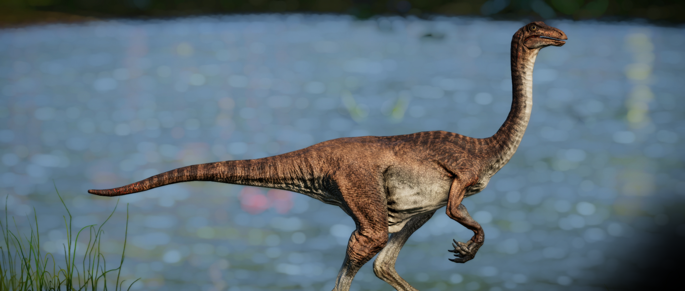

O Galimimo é um gênero de terópode da família dos ornitomimídeos. Embora seu nome se traduza como “imitador de galinha”, ele é o maior dos dinossauros ornitomimídeos, com cerca de 450 kg e 4 m de comprimento. Seu nome se refere às vértebras do pescoço, que são semelhantes às das galinhas. Ele é rápido, ágil, inteligente e tem uma excelente visão. O Galimimo é bem adaptado para fugir de predadores e capturar suas próprias presas.